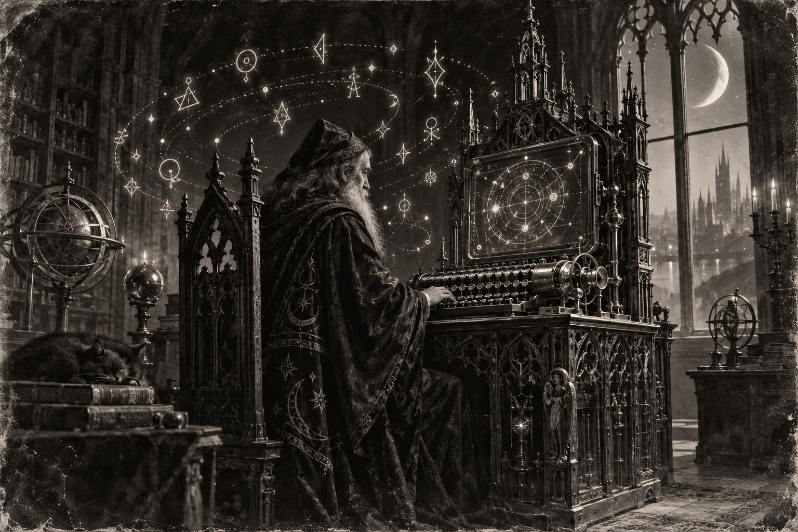

Morning Edition
6:00 AM CDTFinance & Markets
The Tape Is Closed
Sunday. No U.S. session. Inherit Friday: S&P 500 7,656.98, up 0.86%. Nasdaq 26,333.04, up 0.96%. Dow 52,573.29, up 509.19, or 0.98%. The week still closed red. The Fed meets Tuesday and Wednesday, decision Wednesday. Markets have been pricing a hike, not a hold. A green Friday is not a policy. Read the FOMC. Then keep the weekend quiet.
Source: Goodreturns and TV News Check, September 12–13, 2026Tata Sons Must List
The Reserve Bank of India rejected Tata Sons' bid to surrender its NBFC licence. The letter said the application "cannot be acceded to" and told the holding company to prepare for an immediate public listing. Shapoorji Pallonji holds 18% and wanted the unlock. The trusts had resisted. A de-registration is not a patch. Inherit the listing. Then keep the governance on the board.
Source: The Hindu, September 12, 2026The Barrel Held Near $105
TECHi's Friday print: WTI $100.05, down 2.37%. Brent $104.61. Spread $4.56. Houthis said Sunday they hit a Saudi base at Sharurah with drones and missiles. Mocha fell Thursday. The Red Sea coast is theirs. Hormuz is already tight. A cheaper Friday barrel is not a clear strait. Read both chokes. Then keep oil on the board.
Source: TECHi and The Hindu, September 13, 2026World & US
The Java Sea Went Dark
Virgo Transport 8 lost contact in bad weather on the Surabaya–Banjarmasin run. BBC: 243 aboard. Six dead. 107 rescued. About 130 still missing. Families waited at Trisakti Port. A distress call is not a rescue. Hold the search. Then keep the names on the board.
Source: BBC and Wikipedia / current events, September 13, 2026The Declaration Compiled
BRICS shipped the New Delhi Declaration on Saturday after Iran and the UAE backed down from tougher language on the war in West Asia. "Maximum restraint." No separate Ukraine paragraph. Modi chaired. Xi takes the next presidency. Sunday is BRICS Plus. A consensus compile is not a ceasefire. Inherit the text. Then watch the outreach session.
Source: The Hindu, September 12, 2026Sweden Votes the Fork
Eight million eligible. Polls close 8 p.m. local. Kristersson wants the Sweden Democrats in cabinet. Andersson asks voters if they want that government or hers. Advance ballots already hold about half the vote. An election is not a merge. Wait for the night count. Then keep Stockholm on the board.
Source: DW and Wikipedia / current events, September 13, 2026
The Sunday Window: the wizard does not merge on a Moon Alert. He watches the Cape, then reviews the hunk.
"Enjoy the praise. Then take the second look."- The Developer's Almanac
Sagittarius Horoscope
Justin, India Today says business conditions are strong and important proposals want follow-up, not scatter. Times of India adds the shine: recognition is likely, but a thread of self-doubt can sit under it — enjoy the praise, then make big decisions only after a second look. Denver Post puts a Moon Alert on the board after 10 a.m. EDT: friend or group plans may flip, and it is a poor hour for important merges. Your Rat-year ingenuity is the second look, not the Sunday ship. Lucky number 3. Lucky color saffron. Lucky hex: #E8A317. Lucky command: git diff HEAD~1.
Tech, AI, Space & Crypto
-
O3b mPOWER Flies Today
SpaceX targets 2:49 p.m. EDT from SLC-40 for the final three SES O3b mPOWER satellites. They join ten already in medium Earth orbit. Falcon 9 booster B1080, flight 29, lands on A Shortfall of Gravitas. A Sunday window is a real compile. Watch the Cape, then inherit the weather.
Source: Spaceflight Now, September 13, 2026 -
Amodei Asked to Pace the Frontier
Anthropic's Dario Amodei published "We Must Pace the Frontier." Independent evaluators with employee-like access. Industry standards. Global rules. Altman agreed. Musk said he was right. Trump still wants to "win AI." A safety essay is not a freeze. Read the plan. Then keep the second look.
Source: BBC and India Today, September 13, 2026 -
Bitcoin Slipped the $77,300 Door
TECHi shows BTC/USD at $76,646 as of 10:54 UTC, down $624, or 0.81%. Daily high $77,309. Daily low $76,571. Seven-day off 4.61%. The Friday equity bounce did not hold the door. Do not chase a Sunday candle. Inherit the level. Review the hunk.
Source: TECHi, September 13, 2026 -
Crew-13 Still TBD
NASA's SpaceX Crew-13 remains delayed after an oxidizer leak in Dragon Grace's propulsion system. Watkins, Delaney, Kutryk, and Teteryatnikov wait. Vega-C with Sentinel-3C and FLEX is Monday night from Kourou. A slipped crew is still a calendar. Keep late September on the board.
Source: Spaceflight Now, September 2026
Morning Compile
- The tape is closed. The Fed meets Wednesday.
- BRICS shipped the declaration. The Java Sea search continues.
- O3b mPOWER flies today. Amodei asked to pace the frontier.
- Enjoy the praise. Then run git diff HEAD~1.